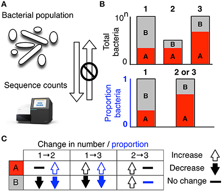

9 Handling microbiome data
9.1 A word about microbiome sequencing
When a microbiome sample is sequenced by a genetic sequencing machine, the results are presented in large files, called FASTQ, made of the A, C, T, G letters of the genetic code along with other information about measurement accuracy and more. The final report sent to you as a customer, builds from these files using a bioinformatics “pipeline” designed to summarize the genetic code into a more readable format. Embedded within the pipeline are dozens of assumptions about how to best interpret the genetic letters, including how to handle cases where the interpretation is unclear, or even arbitrary. For example, although the sequence of a common microbe like Streptococcus mutans is well-understood, how close does a sequence have to be before the report can confidently describe it as a member of that species? Different pipelines make different assumptions. One might say it can be off by 10 letters, while another might say 5; other pipelines might judge based on the particular microbe. And what should the report do when the sequencer returns less-than-confident results? No sequencer can be perfect all of the time, so by necessity some allowance must be made for how much leeway should be allowed in an interpretation.
9.2 Microbiome datasets are compositional
Once the pipeline has been tweaked to give consistent answers for a particular lab, another question awaits.
Since most tests report the relative abundance of a particular microbe, the totals will always sum to 100%. While this makes sense when you want to know the overall composition of the microbiome, it may not be as useful when studying how the results from one day compares to another.
The reason is compositionality, sometimes called the “sum to 1” problem. To explain this, let’s use a concrete example.
9.3 Example
Suppose we have the following result for our first test:
| Test 1 | ||
|---|---|---|
| Microbe | Absolute | Relative |
| A | 100 | 10% |
| B | 500 | 50% |
| C | 400 | 40% |
| D | 0 | 0% |
| Total | 1000 | 100% |
We don’t specify the units in the “Absolute” column, but it can be whatever you like: grams, tons, mg/mL – it doesn’t matter. In this simple example, we measure a total of 1000 (of something) and compute the various relative amounts. All is well.
In our second test, for whatever reason, we collect a lot more stuff, leading to a larger absolute amount but the relative amounts are unchanged.
| Test 2 | ||
|---|---|---|
| Microbe | Absolute | Relative |
| A | 150 | 10% |
| B | 750 | 50% |
| C | 600 | 40% |
| D | 0 | 0% |
| Total | 1500 | 100% |
But now consider a different case. This time, for some reason one of the three microbes has a massive increase in absolute terms. Importantly, none of the other microbes changed. This might happen if your sample were somehow contaminated, for example, perhaps from some extraneous microbe entering the tube after you sampled it. Or it could be that the sampling site suddenly had a new growth of an new microbe that doesn’t affect anything else. Lots of reasons could explain why the absolute values of various microbes could be unchanged even the relative values are substantially different.
| Test 3A | ||
|---|---|---|
| Microbe | Absolute | Relative |
| A | 150 | 8% |
| B | 750 | 38% |
| C | 600 | 30% |
| D | 500 | 25% |
| Total | 2000 | 100% |
But you don’t need contamination for a slight change in one microbe to have a major impact on the relative abundance of the others.
Watch what happens when two microbes, A and B, are unchanged while two others swap abundance amounts.
| Test 3B | ||
|---|---|---|
| Microbe | Absolute | Relative |
| A | 150 | 8% |
| B | 750 | 38% |
| C | 700 | 35% |
| D | 400 | 20% |
| Total | 2000 | 100% |
A and B appear to have the same relative abundances they did in Test 2. This simple case matches our intuition: we expect that the relative values of A and B would be no different than Test 3A. The absolute totals are the same, so again all is well.
But microbes exist in an ecology. They’re not independent of one another. Often an increase or decrease in one will drive a corresponding change in another.
Consider the interesting case where one one microbe (A) doubles in abundance, causing another (B) to halve. Although the changes are directly related to one another, it’s hard to see that in the type of relative summary we get from our report.
| Test 2B | ||
|---|---|---|
| Microbe | Absolute | Relative |
| A | 200 | 24% |
| B | 250 | 29% |
| C | 400 | 47% |
| D | 0 | 0% |
| Total | 850 | 100% |
In 2B, a major change happened – the abundance of one microbe (A) exploded and caused another (B) to plunge. Although another, independent microbe (C) was completely unaffected by this change, when we look only at the relative differences, we might be fooled into thinking that C changed as well, though it didn’t.
Which matters more, absolute values or relative ones? To the extent that the microbiome is synthesizing or digesting various metabolites in the body, it’s clear that absolute values are what we want to watch. But absolute abundances are too hard to track – you’d need to grab the entire microbiome somehow. So instead we assume that the microbiome as a whole maintains a roughly constant absolute volume and that the only change is the relative abundances.
Is that true? It seems unlikely. Other living populations rise and fall depending on all sorts of factors. Your backyard garden, for example, doesn’t have the same absolute volume from one day to another. If you only knew the relative percentage of tomatoes versus cucumbers, would you really know much about your harvest?

9.4 The solution
This problem has been noticed for more than a hundred years in every field touched by statistics: ecology, economics, geology and more. Whenever you have an instrument that can only measure a subset of something, you must make allowances for the fact that the final measure is reported in units of 100%.
The solution is to make calculations based not on overall percentages, but on ratios of each component. The statistics are more complicated, but that’s the only way to make the final result usable.
9.5 Bottom line
It’s very hard to make judgements one way or another from simple comparisons of relative abundance changes from one sample to another. Too many factors determine the measured levels of the various microbes.
Despite this, we know empirically that the overall relative abundances are reasonably stable from one collection to another. Not precisely stable, but at least at the highest, say, phylum levels, the abundances track fairly consistently from day to day. In the oral microbiome, for example, Streptococcus is almost always the lead phylum, with Neissaria and Rothia competing with a few others for second or third place.
Meanwhile, in larger population studies of say thousands of people sampled multiple times, some significant patterns emerge of microbes that are consistently over- or under-represented in various disease states.
Or consider our garden analogy. Knowing the relative percentage of tomatoes and cucumbers might be useful if we had data meticulously collected from thousands of other backyard gardens, along with some “metadata” about each gardener’s assessment of their harvest. You might notice, then, that gardeners unhappy with their tomato crop tend to have lower cucumber yield too. Or there might be a strong correlation between tomato yield and herbicide usage – on average. Still, many or perhaps even most gardens will be significantly different. For example, if the relative abundances appear to match the average, you might be fooled into thinking that a garden suffering from an overall poor harvest is fine.
In other words, treat numbers like “relative abundance” with an appropriate level of skepticism.
Gloor et al. (2017)